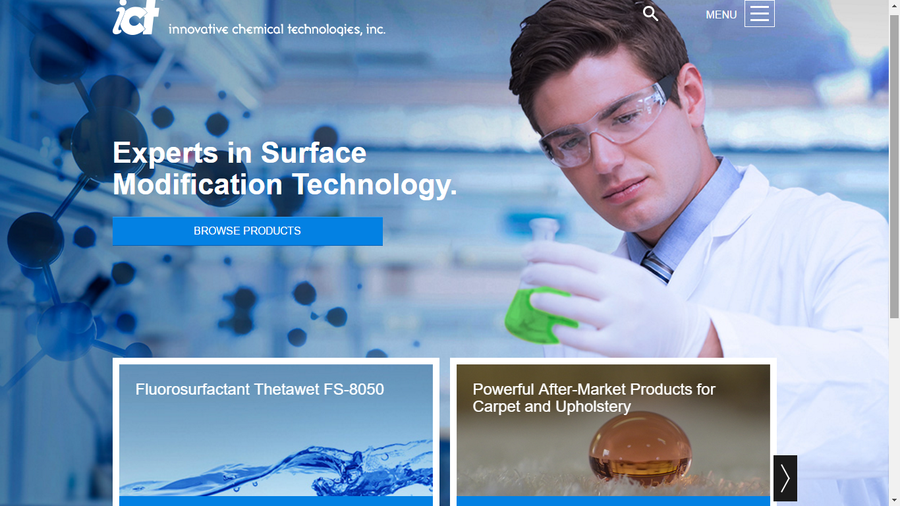
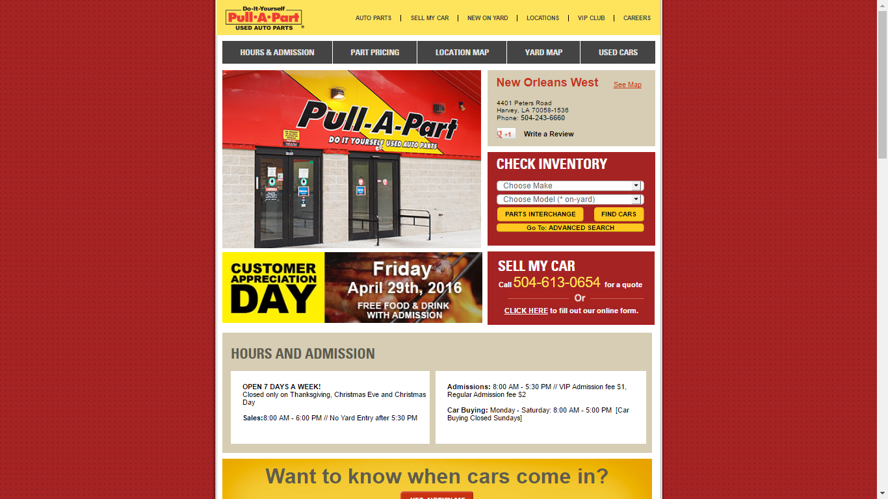

My Work
-

ICT Chemicals Responsive Redesign
Acted as front-end lead for the complete revamp of ICT Chemicals website, utilizing ASP.NET backend and Responsive Front-End. Worked with multiple other developers to finish project within timeline and under budget.
See it live HERE -

FATZ
Acted as front-end lead for the complete revamp of ICT Chemicals website, utilizing ASP.NET backend and Responsive Front-End. Worked with multiple other developers to finish project within timeline and under budget
-
ConocoPhillips Innovation Challenge
Acted as front-end lead for the complete revamp of ICT Chemicals website, utilizing ASP.NET backend and Responsive Front-End. Worked with multiple other developers to finish project within timeline and under budget
-

Pull-A-Part Responsive
For Pull-A-Part, I worked as a front-end developer, working with both ASP.NET and front-end pieces to develop additional functionality and convert Pull-A-Part's website to a responsive design.